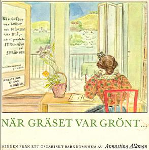
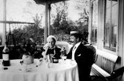
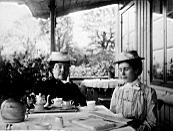
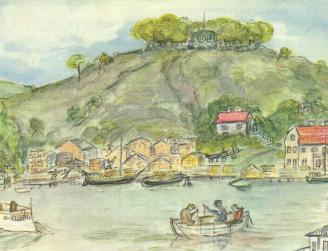
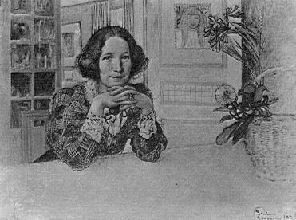

Södermalm i tid och rum. Stockholm

De där höst- och vårpromenaderna stärkte nog också vår fysik - folk gick inte frivilligt så långa sträckor på det osportiga åttiotalet, då vi första gången kom till Bergshyddan. Det var sommaren 1888 då " Gauthiod" byggdes om från hjulångare till propellerbåt på Lindbergska varvet vid Tegelviken. Pappa var kontrollant för bygget och ville bo i närheten, och som han kände alla människor i Stockholm på den tiden, fiskade han snart upp det gamla "Kristinajaktslottet", som tillhörde Funcharna, i Patonska trädgården och fick hyra det. Naturligtvis har det aldrig varit något jaktslott annat än i folkfantasin, som tycker om att förgylla kåkar, men en del av Stockholms gamla försvarsverk var förlagt till berget och den äldsta byggnaden, stenhuset, var en vaktstuga till den anläggningen.
Ingen kan beskriva Bergshyddans charm bättre än den som bodde där medan berget ännu var intakt och det gamla Danviken låg kvar på näset fram till Hammarby sjö, som var en idyllisk insjö utan naturförstörande industrier. Därifrån kom hela inlandsvåren med lövgrönska och kabelleka, medan Saltsjösidan av berget, som hade brädgården vid sin fot, doftade av tall och gran nästan som en levande skog. Ett rent strömvatten skvalpade friskt alldeles nedanför berget, där brädgården tog slut och vårt badhus låg och lockade. I bergsskrevorna blånade styvmorsblommorna i maj och glödde smultronen i juni och fruktträden i den gamla trädgården bredde ut sin blom som snurrande dansöser sina vita kjolar. Det var så vackert däruppe att man måste hålla andan, om man också bara var åtta år och inte visste vad extas var!
|
  Bergshyddan 1902 Bergshyddan 1902
|
VI BODDE BARA DEN ENDA ÅTTIOTALSSOMMAREN på Bergshyddan som ett intermezzo i det halvtyska liv som vi glidit in i. Men mammas hjärta hade fastnat däruppe i de stensötefyllda skrevorna och efter några år var kråkslottet åter vårt, även om vi inte alltid bodde där. Det stod och väntade på oss, hur vi flackade och for under nittiotalet. Från och med 1894 bodde vi halva året däruppe intill 1900, då pappa dog, med avbrott för sommarveckor i Travemände eller på resa. Det var som om hela vår Rydellska livsföring inte kunde gå riktigt i lås utan en sån där idyll i kultursamhället att kretsa kring. |
| LIVET PÅ SJÄLVA BERGSHYDDAN roade mig också, och jag hade många plikter. Hälsa med flaggan fyra gånger i veckan, när Pa for förbi; hjälpa Rinaldo att bära och tömma det vatten han knogade upp från Danviks hospitalpump i tunnor och cisterner och ge honom hans två öre per ämbar, som han var mycket noga med. Den ståtlige gubben med det klingande rövarnamnet kallade sig själv för instrumentmakare, men enligt farbror Nyman, sysslomannen på hospitalet, hade han bara "makat pianon" i sin ungdom, det vill säga varit flyttkarl hos en pianofirma. Hur som helst så makade han nu vatten så mödosamt att jag fick hans pris höjt till fem öre. Då gick det galant. |
  Bergshyddan 1901. Damen i svart fru Elisabeth Funch, född Nisser Bergshyddan 1901. Damen i svart fru Elisabeth Funch, född Nisser
|
Jag fick också sköta hushållet när mamma rest bort med pappa. Vi hade hushållsfröken i många år, men mamma ville inte anförtro ledningen varken åt Hulda Persson eller fröken Berglund utan hedrade mig med att få bestämma matsedeln och föra räkenskaperna. Undra på att jag satte på mig mammas lilla koketta huvudplätt ocht spetsförkläde som hon ibland lekte huslig i, när jag sprang ner till trädgårdskontoret efter kvällstidningarna. Men den gången fiskade jag inga komplimanger. James Funck trodde vi hade fått en ny husa.
|
Nöjena bestods som alltid av pappa. Ibland kom han med roddare och en av de stora
livbåtarna ombord (som hette "Martha", "Annastina", "Britta" och "Docki") för att hämta oss
till utflykt. De härligaste matsäckskorgar, packade av Anna Norberg, skymtade bredvid både
vin och sprit. Ibland kom han bara med August, passoppen, i lilla båten för att hämta mig
och James Funch ut till strömmingspimpling på Strömmen. August fick vänslas i
vårt kök medan vi låg ute, sedan fick han ro in båten till Skeppsbron igen. Men
ensamma fick vi aldrig gå i båt. Det var tabu. "Bara en sjöman vet, hur farligt det
är på sjön", sa pappa. Allteftersom vi växte, växte nöjena. När de främmande flottbesöken kom, när "Baltimore" förde hem John Ericsons lik och Kaisern kom med "Hohenzollern" blev det ju alltid bal ombord på någon kryssare eller "monitor", och vi blev bjudna |
 
|
VI UNGDOMAR VAR SKROCKFULLA - fyllda av gamla föreställningar om naturens kärleksbudskap. Midsommarnatten vakade vi på Fåfängeberget, ensamma förstås, eftersom det den tiden var enskild egendom, kringgärdat av plank och låsta grindar. Vi gick ut i bara nattskjortan för att vid en korsväg plocka nio sorters olika blommor att lägga under huvudgärden. Sedan måste man drömma om den älskade. Men dessförinnan serverade vår vän Wilma oss salt sill och påbjöd absolut tystnad under plockningen och ingen vattendrickning innan vi somnade. Vi låg där och letade gräs i det bleka sommarnattsljuset och teg och led och fnissade invärtes. Åtminstone jag som alltid var klentrogen. Men jag var ändå noga med att följa ritualen. Martha glömde sig lättare, och föga uthållig som hon var sjönk hon ihop redan efter femte blomman och sa: "Godnatt, godnatt, nu sover jag redan på mina !" Ändå blev det hon som tog hem den första kärestan.
Sommarnatten över Strömmen har prins Eugen målat. Men på den tiden fanns bara en kvarn och ingen prins på Valdemarsudde som kunde återge guldstoftet i luft och vatten, när solen just krupit ner i sin florstunna sovsäck. För säkerhets skull hade vi tänt ljus i våra sovkamrar under takåsen, men det behövdes sannerligen inte för himlen var lanternagrön och vattnet rosa och gult och all grönskan såg ut som ärg på en kopparkittel. Till och med taken lyste i rött och lila och våra vita nattskjortor gjorde oss spöklika.
|
 Annastina Alkman, porträtterad av Carl Larsson |
Jag brukade aldrig stänga de gamla gröna fönsterluckorna för min "blå kammare" på ena kortändan, ett förtjusande litet rum med väggfast sängsoffa. Den fanns ännu kvar i samma skick hos fru Krogh, som bodde på Bergshyddan till sin död, och hos hennes dotter fru Gyllenswärd. Ännu har inte en oförstående modern stadsstyrelse sprängt ner hela berget för att förse staden med fyllnadssten för kaj- och brobyggen!! Och inte heller byggt hyreshus på kalotten. Om skrockfyllda naturritualer kunde hejda den vandalismen, skulle jag sätta så många sillar i halsen under nattlig blomsterplockning, att jag stelnade som Lots hustru till en saltstod. |